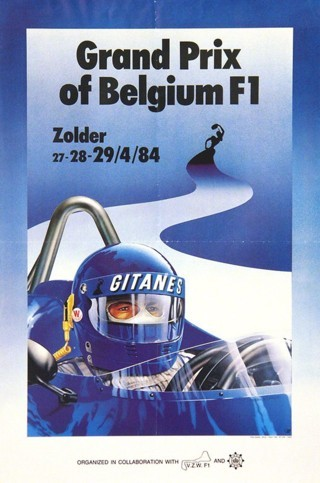
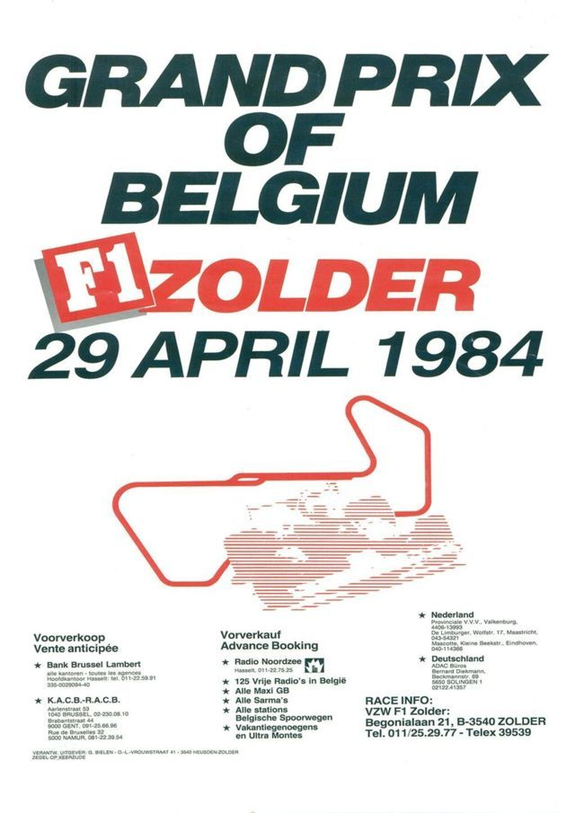
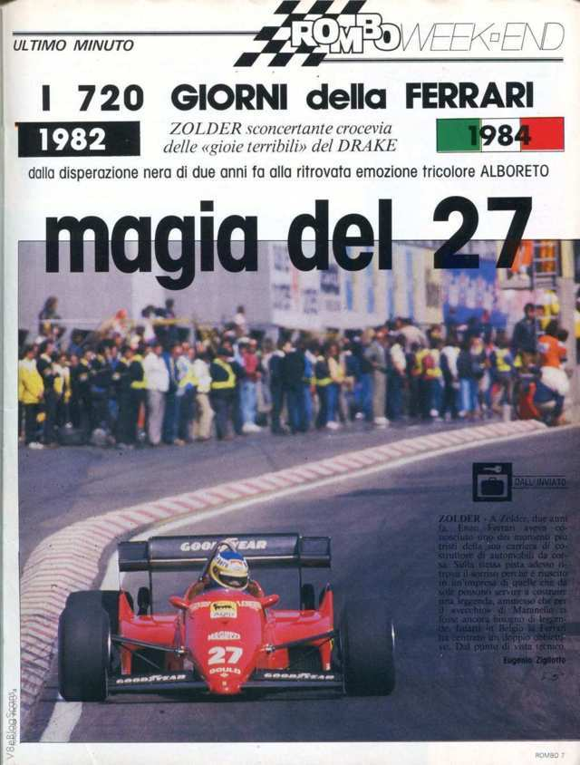
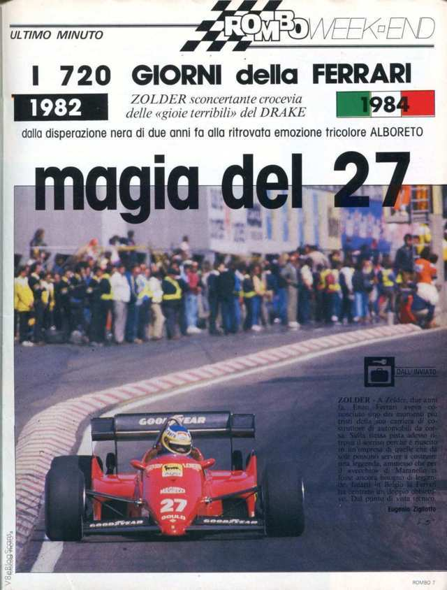

Michele Alboreto
Rosso 27

Victories
Michele didn't win as much as he deserved.
5 Victories in Formula 1, the European Formula 3 Championship,
and especially the 24 Hours of Le
Mans in 1997, were the Highlights of his Career
The best
year in Formula 1 was in the 1985 World Championship. When he was in the lead for most of the season, he had
to retire 4 times in the last 5 Races for Engine and Turbo failures
April 29, 1984-Belgium Grand Prix Zolder Circuit
Summary
Goodyear dominated qualifying filling six of the top seven places with Michele Alboreto securing his first career pole position. Teammate René Arnoux was second, followed by Keke Rosberg in the Williams FW09-Honda.
The race
Alboreto led all 70 laps and was even able to retain the lead during pit stops, despite Piquet pushing through without stopping.Warwick started well to run second for much of the race with Arnoux, Winkelhock and de Angelis pursuing. Prost and Riccardo Patrese (Alfa Romeo 184T) were early retirements with Cecotto dropping out on lap 1 with a broken clutch. Lauda's McLaren MP4/2 broke its water pump at half-distance, the second such failure for the TAG-Porsche engine after Prost suffered the same fate on the warm up lap in South Africa. Shortly afterwards Winkelhock stopped and Andrea de Cesaris crashed his Ligier JS23-Renault. Piquet found himself third after the stops, but faded as the race neared its conclusion. Arnoux moved into third until he was caught by Rosberg. Piquet's BMW engine blew and with a lap to go Rosberg ran out of fuel, allowing Arnoux to join Alboreto and Warwick on the podium. Rosberg was classified fourth, with de Angelis fifth and Stefan Bellof completing the top six in his Tyrrell 012-Ford.
Aftermath
The results would change months later as the impact of Tyrrell Racing's disqualification from the 1984 season saw Stefan Bellof removed from sixth position, promoting Ayrton Senna (Toleman TG183B) into the points. The Belgian Grand Prix would return to traditional home at Circuit de Spa-Francorchamps in 1985. The shortened version of the home of Belgian motorsport had its Formula One debut the previous year and proven instantly popular and Gilles Villeneuve's death two years earlier at Zolder was still fresh.

70 laps, 298.34 km (185.38 mi)
Podium
1st Michele Alboreto-(Ferrari)
2st Derek Warwick-(Renault)
3rd Rene' Arnoux-(Ferrari)
Pole position
Michele Alboreto-(Ferrari) Time 1:14.846
Fastest lap
Rene' Arnoux-(Ferrari) Time: 1:19.294 on lap 64
 
1
Michele Alboreto
(Ferrari)
2
Rene' Arnoux
(Ferrari)
3
Keke Rosberg
(Williams-Honda)
4
Derek Warwick
(Renault)
5
Elio de Angelis
(Lotus Renault)
6
Manfred Winkelhock
(ATS-fancybox
 

{kind=link}
{kind=link}
{kind=link}
{kind=link}
{kind=link}
{kind=link}